WORK03 PROJECTS
WORK 0101 / 03
헤이영캠퍼스 리디자인
매일 여는 학교 앱을 다시 들여다보고, 대학생에게 더 필요한 기능과 더 편한 UI 구조로 재설계했습니다. 출석체크와 오늘 수업, 스쿨버스 도착 시간처럼 자주 찾는 정보를 홈 화면 위쪽에 모아, 헤매지 않고 바로 닿도록 정리했습니다.
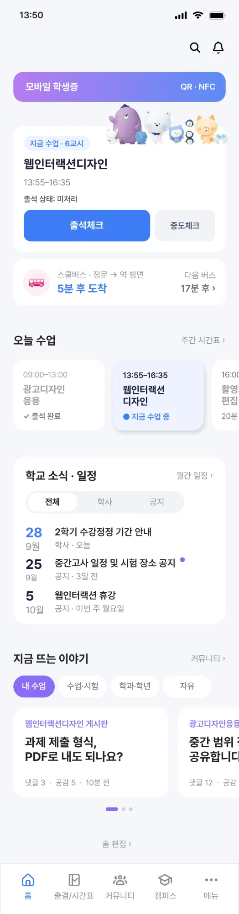
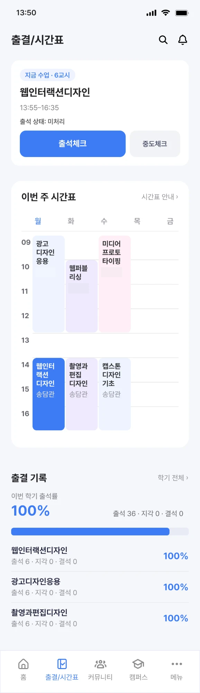
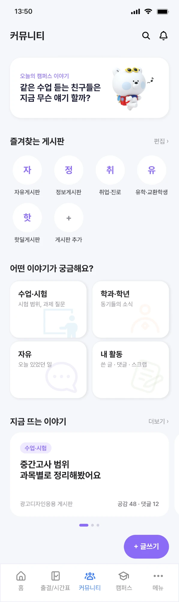
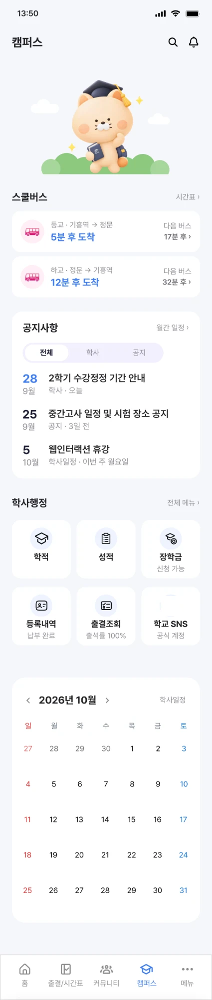
WORK 0202 / 03
ADERERROR 웹사이트 리디자인
아더에러 온라인 스토어를 다시 디자인했습니다. 메인과 컬렉션(시그니피컨트 · 에센스), 카테고리 목록, 홀리데이 기획전 페이지를 같은 그리드로 정리하고, 목록 페이지 위쪽에 시리즈로 보기 · 가격대로 고르기 · 필터를 모아 원하는 상품을 빠르게 좁힐 수 있게 했습니다. 상품 사이에는 캠페인 카드를 넣어 컬렉션 이야기와 쇼핑이 한 화면에서 이어지도록 구성했습니다.
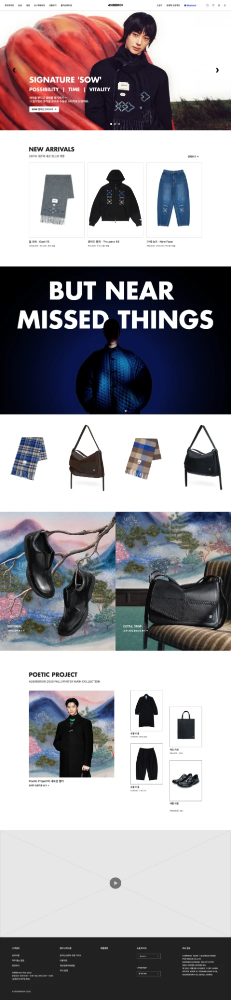
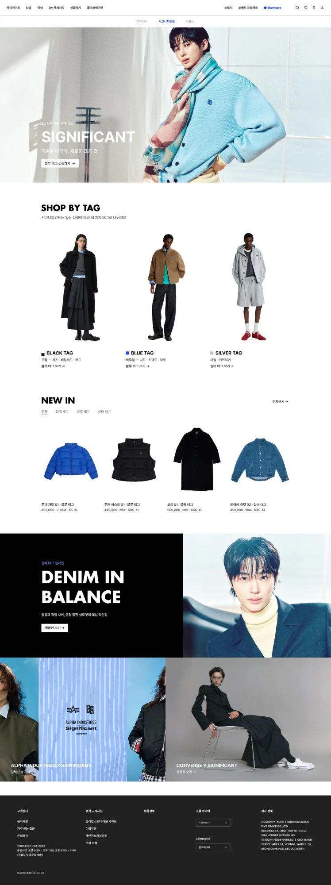
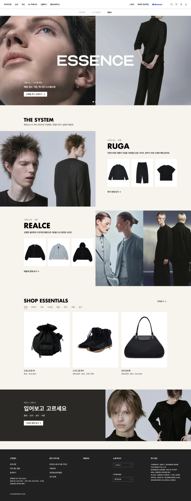
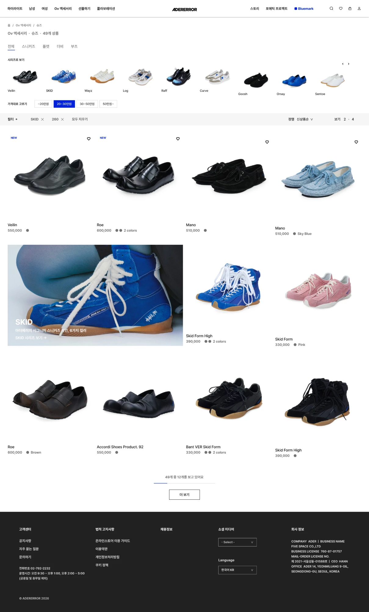
WORK 0303 / 03
BODA 반려견
건강 앱
반려견의 심박수와 체온, 활동량을 웨어러블로 읽어 보여 주는 건강 관리 앱입니다. 상태에 따라 홈 화면의 색과 문장이 바뀌어 한눈에 알 수 있고, 음성으로 기록을 찾으면 AI가 요약해 줍니다. 음성 읽기와 고대비 모드, 텍스트 크기 같은 접근성 설정도 함께 설계했습니다.
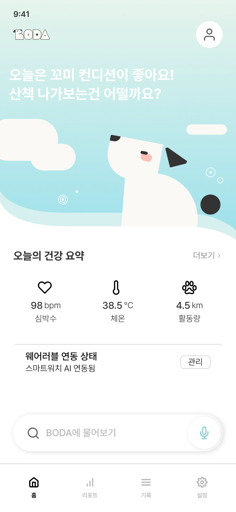
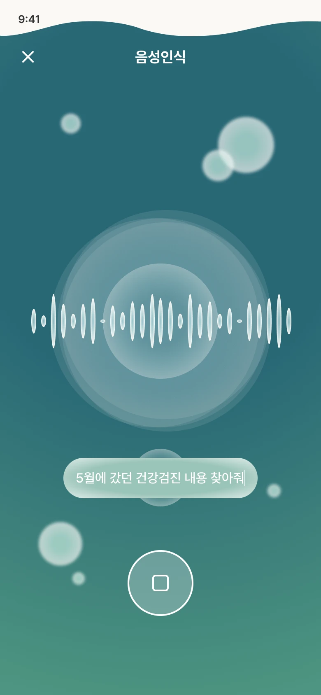
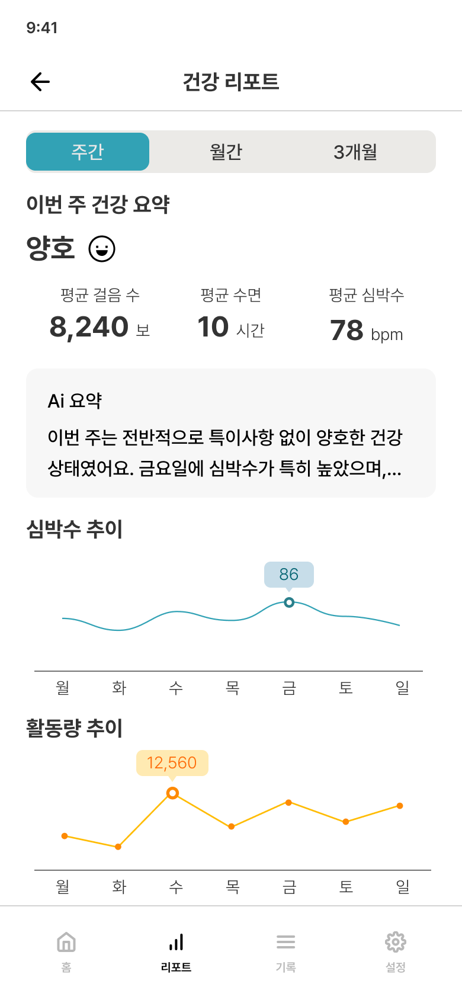
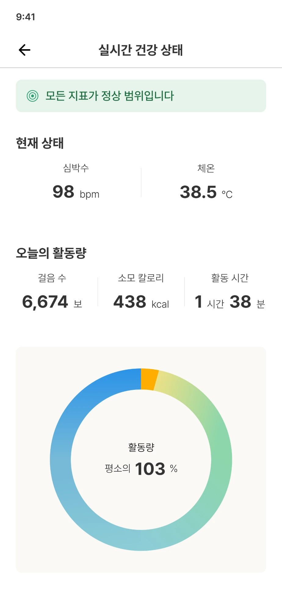
ABOUTUX/UI DESIGNER
깊이 들여다보고,
빛나는 것을 찾아 보여주는
디자이너, 남윤아
매일 쓰는 것들을 오래 들여다봅니다. 작은 것 하나, 여백에서 형태까지 살피며 그 안에서 빛나는 부분을 찾고, 누구나 헤매지 않고 볼 수 있는 화면으로 옮깁니다.
ARCHIVEFILM · WORKS
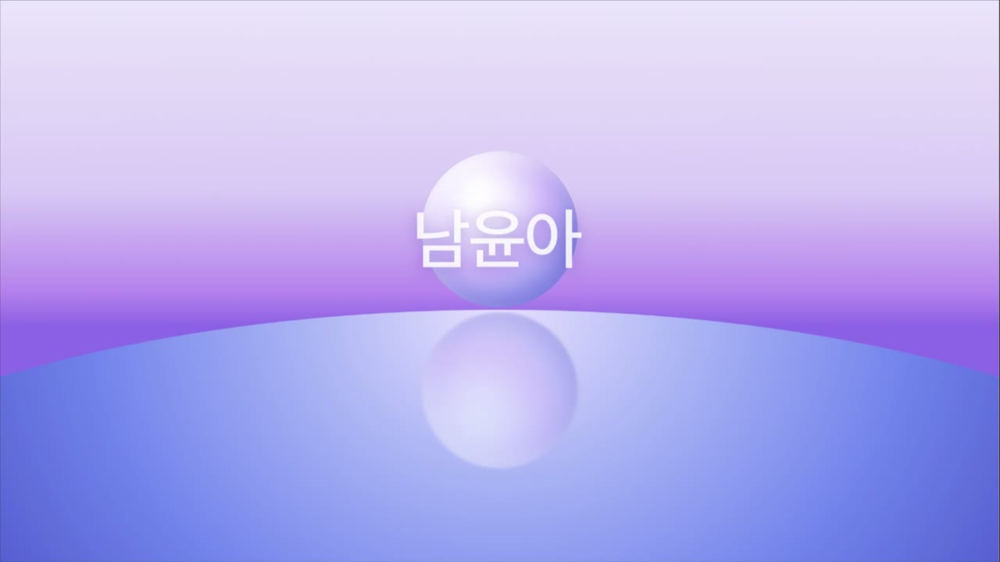
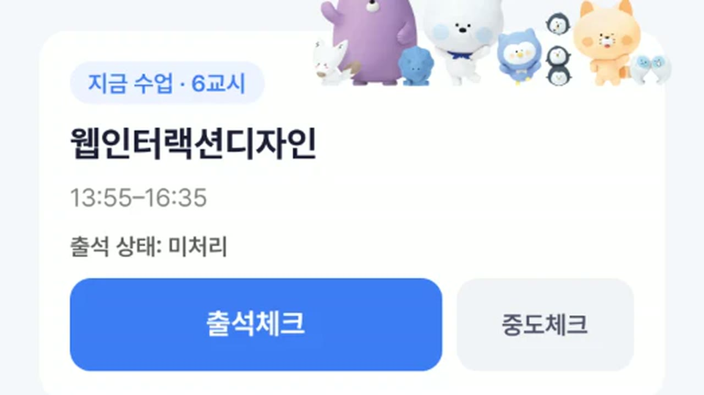
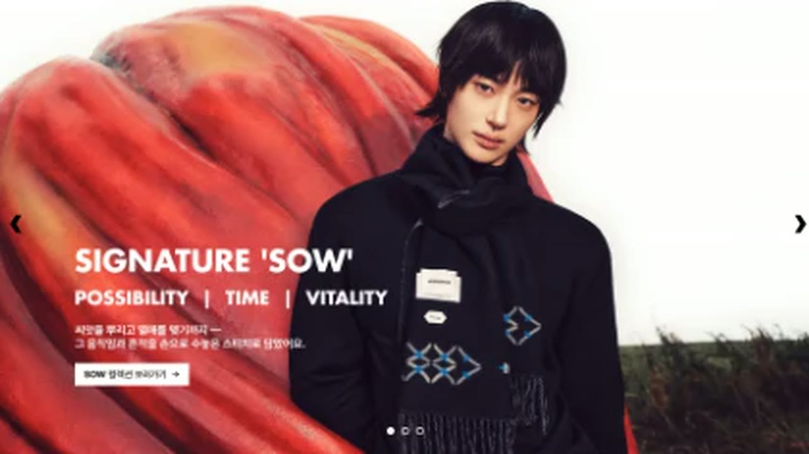
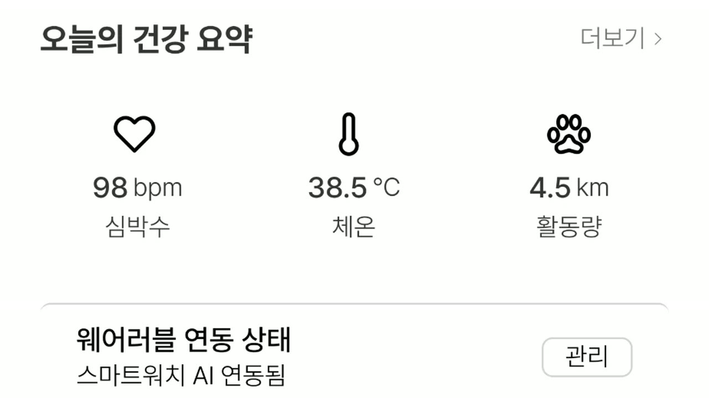